7210E52 R.R. REAR WING
- Path
- Procedures > 72 PANELS AND FRAME > 7210 REMOVING REFITTING > 7210E external parts > 7210E52 R.R. REAR WING
- Kind
- repair procedure (removal / refitting; the operation number is the code)
- Applies to
- all engines; all production periods
- Interactive page
- https://sloeber94.github.io/elrnDB-a156/en/#/3239053
Applies to: all engines; all production periods
Applies to: all engines; all production periods
 Removing
Removing
 Refitting
RefittingCheck if any of the connected parts are deformed by checking body alignment dimensions. Use appropriate measurement tools (reference rigs, templates or gauges).
Straighten the body if necessary.
For removal See Op. 7210E51 left rear wing .
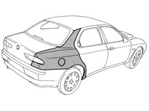
Applies to: all engines; all production periods
Refitting
RemovingCarefully clean around the fuel filler fitting using a cloth and degreasing compound. Wait a few minutes, then go over the degreased area using a dry cloth.
Apply primer to the treated edge.
1. Apply sealant to the edge shown in the figure.
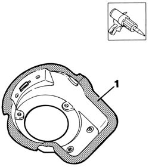
Applies to: all engines; all production periods
1. Position the filler fitting in its seat on the wing.
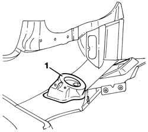
Applies to: all engines; all production periods
1. Tighten bolts (1a) securing fuel cap flap (1b).
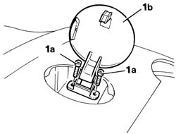
Applies to: all engines; all production periods
1. Close the fuel cap flap and check that it is properly aligned.
2. Close the fuel filler fitting retaining tabs.
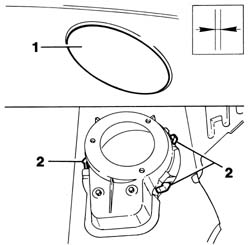
Applies to: all engines; all production periods; only with equipment: Station Wagon
Removing
RefittingCheck if any of the connected parts are deformed by checking body alignment dimensions. Use appropriate measurement tools (reference rigs, templates or gauges).
Straighten the body if necessary.
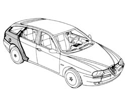
Applies to: all engines; all production periods; only with equipment: Station Wagon
1. Using a power saw, cut along the profile of the wing.
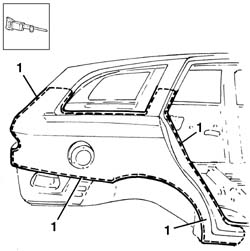
Applies to: all engines; all production periods; only with equipment: Station Wagon
1. Dress down the spot welds on the wheelarch side, near the seat of the door striker and in the door sill area.
2. Remove the excess from the panel.
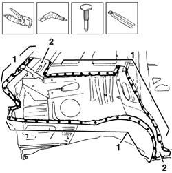
Applies to: all engines; all production periods; only with equipment: Station Wagon
1. Use a grinding wheel to remove the weld spot residues.
1. Straighten the edges of the underlying frame.
3. Use a rotary brush to clean treated areas.
Apply electroweldable paint to the areas to be welded.
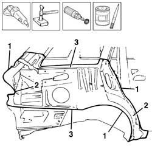
Applies to: all engines; all production periods; only with equipment: Station Wagon
1. Use a rotary brush to remove the rust-proofing around the edge of the part.
Apply electroweldable paint finish to the affected parts.
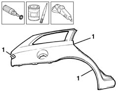
Applies to: all engines; all production periods; only with equipment: Station Wagon
Refitting
Removing1. Correctly position the replacement part on the bodyshell, align it and secure it using self-locking clamps.
2. Trace the cutting line on the upper part of the pillar.
3. Cut the superimposed edges of panel along the line previously drawn.
Remove the part and excess panel edges.
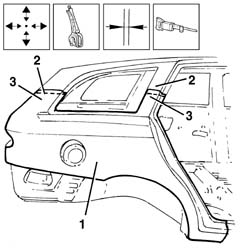
Applies to: all engines; all production periods; only with equipment: Station Wagon
Clean the cut parts and apply electroweldable paint along the edges.
1. Correctly position the replacement part on the bodyshell, align it and secure it using self-locking grippers.
2. Use a MIG welder to weld the wing in the areas shown in the figure.
3. Use a spot welder to weld the wing in the areas shown in the figure.
Check that the welded parts are correctly positioned.
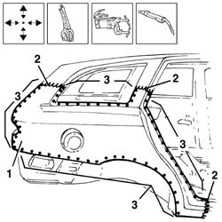
Applies to: all engines; all production periods; only with equipment: Station Wagon
1. Use a rotary brush to dress down the spot welds and clean the areas concerned.
2. Apply rust-proofing to the newly welded areas.
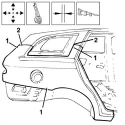
Applies to: all engines; all production periods; only with equipment: Station Wagon